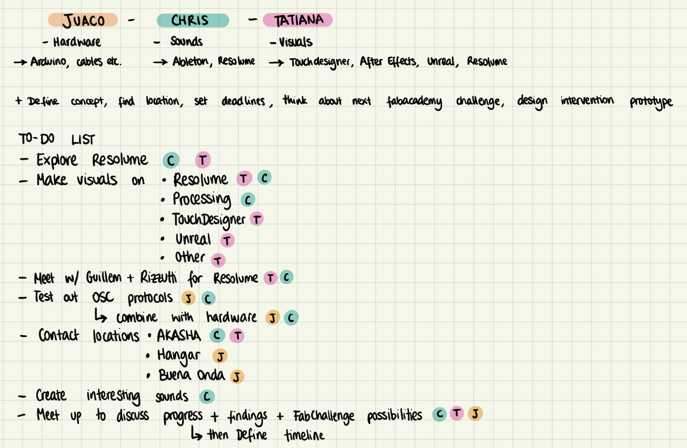
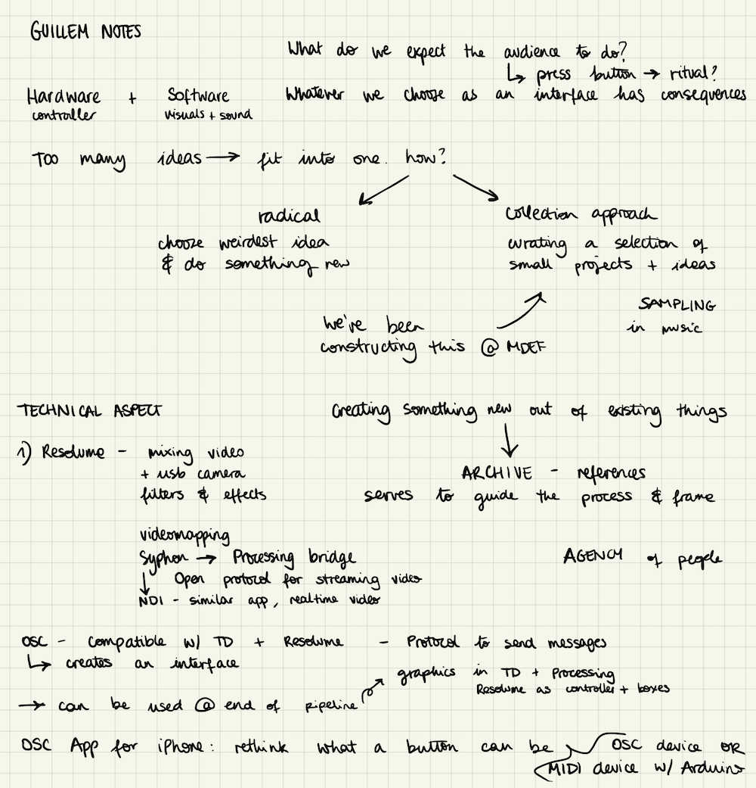

On Tuesday, I had a review with Guillem, where I invited Chris as well to talk about all our ideas. We brought up VJing, Resolume, Processing, OSC protocols and conceptual frameworks. I took notes, which you can find below, but we also decided to create a hackmd to be able to store all of this information.
In between all of this, we decided to invite Juaco onboard to help us out with the hardware and explore musical magic that lives in his brain. We discussed the project again and gave us a list of things to do.

